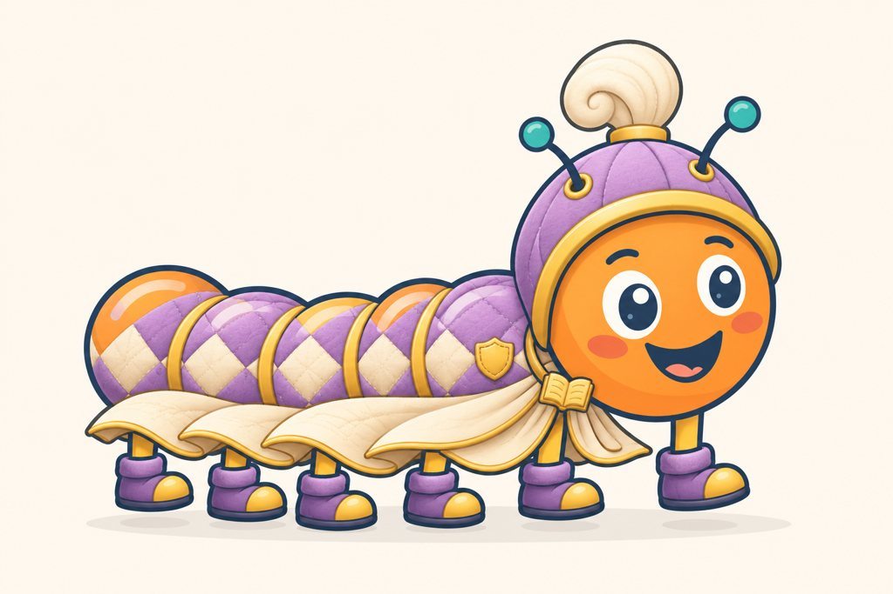
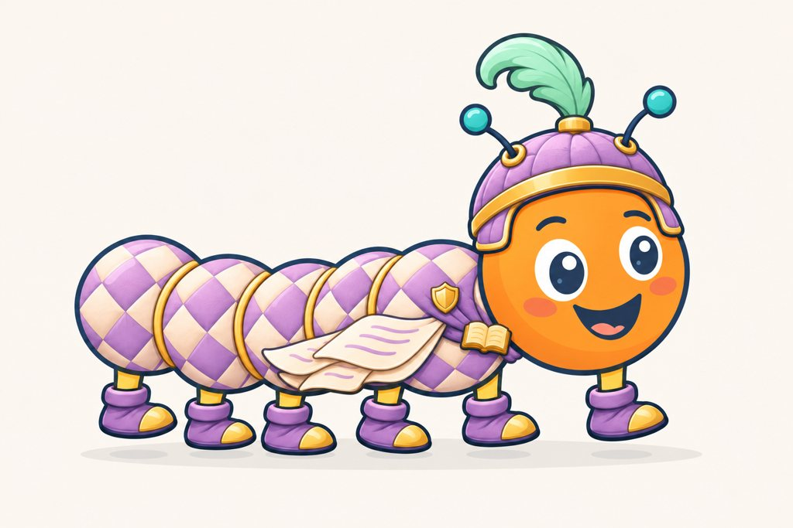
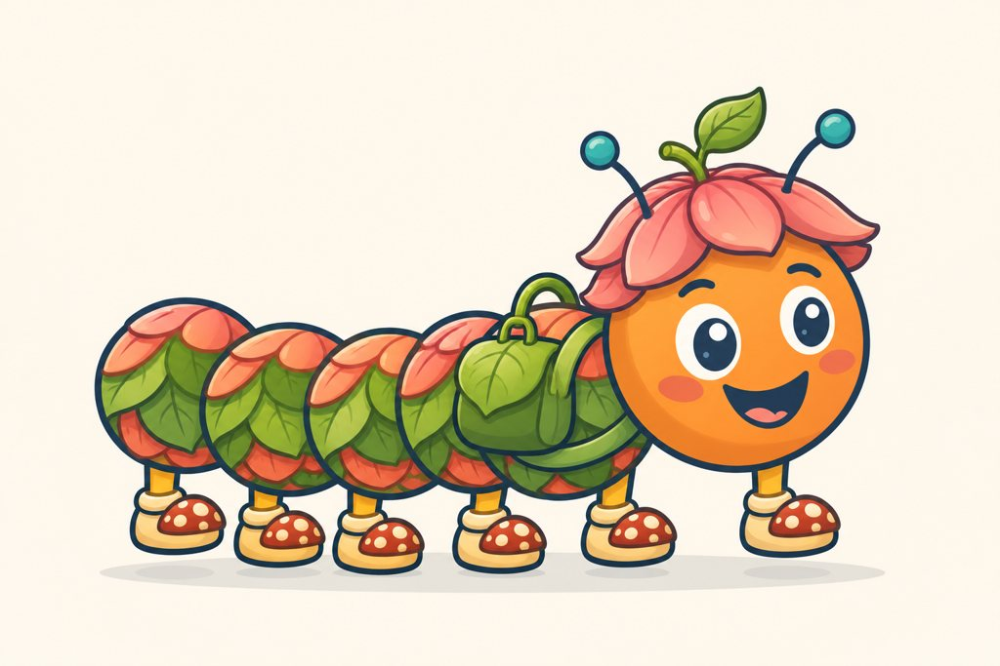
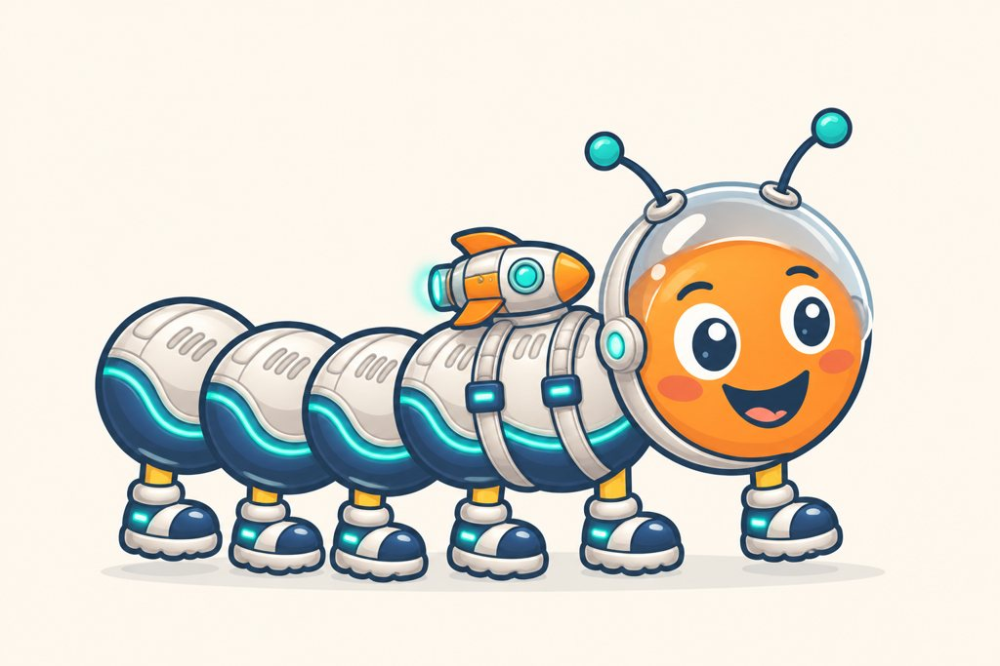

Tienda v3 · Colecciones Fantasía, Naturaleza y Espacio
Propuesta del 3 de noviembre de 2026. Documento completo: TIENDA-V3.md.
Las láminas son conceptos de dirección generados con IA (Codex image_gen) a partir de la referencia aprobada. No son recursos del juego ni piezas aprobadas. Los precios son provisionales E2 (aprobados como referencia, no aplicados al juego).
Fantasía · El reino de los cuentos
Ciempi como caballero de un libro de cuentos: armadura blanda, telas acolchadas y páginas. La fantasía se conecta con la lectura, no con la lucha.


| Producto | Categoría · anclaje | Compat. | Constr. | Escalón | Riesgo (§8) |
|---|---|---|---|---|---|
| Casco suave | Gorros · cabeza | universal | raster | Especial | Casco que domina la cabeza |
| Acolchado | Estampado · segmentos | adaptable | raster atlas | Obra | Cuadrícula plana; tubo |
| Capa de páginas | Espalda · cuello | adaptable | raster | Obra | Plantilla triangular |
| Botas caballero | Calzado · tobillo | adaptable | raster | Común | Bloque sin caña |
| Antifaz grifo | Máscara · rostro | universal | raster | Especial | Ojos sustitutos |
| Mochila cofre | Espalda · segmento delantero | adaptable | raster | Especial | Mochila plana (condicionada) |
| Alas de cuento | Espalda · cuello | solo Dragón | raster | Obra | Rigidez en animación |
| Cresta gema | Extra · lomo | solo Dragón | vector | Común | Picos uniformes |
Conjuntos: Caballero de cuentos (universal) · Dragón real (solo Dragón).
Naturaleza · El jardín de Ciempi
El lugar donde vive Ciempi: pétalos, hojas y hongos. Es la colección de la Cuncuna y la que estrena las mochilas rediseñadas.

| Producto | Categoría · anclaje | Compat. | Constr. | Escalón | Riesgo (§8) |
|---|---|---|---|---|---|
| Gorro pétalo | Gorros · cabeza | universal | raster | Común | Casquete |
| Jardín | Estampado · segmentos | adaptable | raster atlas | Obra | Ruido a 84 px |
| Mochila hoja | Espalda · segmento delantero | adaptable | raster | Especial | Mochila plana |
| Zuecos hongo | Calzado · tobillo | adaptable | raster | Común | Seis pies; nada de amanita |
| Bufanda musgo | Bufanda · cuello | universal | vector | Especial | Parece corbata |
| Antifaz zorro | Máscara · rostro | universal | raster | Especial | Ojos sustitutos |
| Mechones rocío | Extra · segmentos | solo Cuncuna | vector | Común | Mechones como casquete |
Conjuntos: Jardinero (universal) · Cuncuna del bosque (solo Cuncuna).
Espacio · Viaje a las estrellas
Ciempi astronauta, cálido y acolchado, nada militar. Da piezas propias al fondo Espacio, que ya existe.

| Producto | Categoría · anclaje | Compat. | Constr. | Escalón | Riesgo (§8) |
|---|---|---|---|---|---|
| Casco burbuja | Gorros · cabeza | universal | raster semitransparente | Especial | Vidrio que tapa la mirada |
| Traje astral | Estampado · segmentos | adaptable | raster atlas | Obra | Emblemas pegados |
| Mochila cohete | Espalda · segmento delantero | adaptable | raster | Especial | Apoyada en vez de colgada |
| Botas lunares | Calzado · tobillo | adaptable | raster | Común | Bloque rectangular |
| Capa cometa | Espalda · cuello | adaptable | raster | Obra | Plantilla triangular |
| Antenas luz | Detalle · antenas | universal | vector | Básico | Efecto fijo al animar |
| Lentes planeta | Lentes · rostro | universal | vector | Común | Cristal opaco |
| Cola cometa | Extra · cola | solo Dragón | vector | Básico | — |
Conjuntos: Astronauta · Cometa (los dos universales).
Bocetos: sección Personajes y aviso de compatibilidad
Sin temporizadores, sin «te faltan X monedas», sin sonidos de compra. Probar nunca guarda.
Cuncuna: «Llega cuando termines tus primeros cuentos.»
• Capa de héroe (usa sus alas)
• Mochila cohete
Siguen siendo tuyas. Vuelven a aparecer cuando seas Ciempi.
Entendido
En la grilla, las piezas que no aplican se ven atenuadas y no desaparecen:
Si no alcanza el dinero, el botón queda desactivado y ofrece «♥ Guardar», sin decir cuánto falta.
Precios provisionales E2 (no aplicados)
| Producto | Precio provisional | Sesiones de 15 min de un niño de nivel 0 (mediana) |
|---|---|---|
| Cuncuna | 0: se gana con 6 de los 8 cuentos de nivel 0 (o 6 de cualquier nivel; o 60 min + 30 frases de nivel 0 para lectores lentos; o regalo del adulto) | 6 (lector muy lento: 11) |
| Dragón | 80 | 4 (muy lento: 5) |
| Básico / Común / Especial / Obra | 10 / 16 / 24 / 30 | 1 / 1 / 2 / 2 |
| Conjuntos de colección | ~60–85 (20 % menos sobre lo que falta) | 3–5 |
| «Dragón real» | 107 | — |
Dos olas: ola 1 = 360 (16 piezas); ola 2 = Dragón + exclusivos + mochilas = 224. Catálogo actual sin cambios. Detalle en TIENDA-V3.md §4.6 y §4.8.